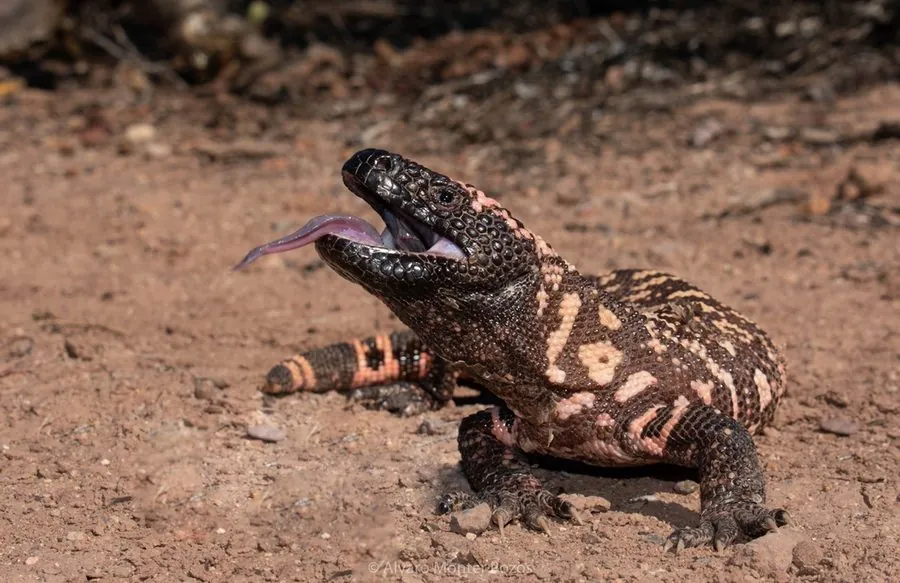

爬行动物 · 动物界
希拉毒蜥 Heloderma suspectum

美国西南与墨西哥西北部的有毒蜥蜴，体粗尾短、身披粉黑相间的珠状鳞片，行动缓慢却能靠咬合注毒，是北美唯一的有毒蜥蜴。
- 分类
- 门脊索动物门纲爬行纲目有鳞目科毒蜥科属毒蜥属
- 栖息环境
- 干旱灌丛、石质坡地、峡谷与沙漠边缘的岩石缝隙
- 地理分布
- 美国亚利桑那、新墨西哥、犹他南部、加州东南边缘与墨西哥西北部
- 保护级别
- IUCN 近危（NT）；CITES 附录Ⅱ；美国多州列为受保护物种
物种志
希拉毒蜥体形粗壮，全长 35–60 厘米，体重 350–700 克，尾部短粗用于储存脂肪，外形像一根粗大的香肠。全身覆盖珠状骨鳞，底色黑褐，上面散布粉红、橙黄或淡黄的斑块与横带，图案鲜艳醒目。头部略扁，颌部肌肉发达，下颌两侧各有一排毒腺，毒液通过下颌的沟牙注入伤口，这是它区别于其他蜥蜴的关键特征。
它们分布于美国亚利桑那、新墨西哥、犹他南部与墨西哥西北部的索诺拉荒漠，栖息于干旱的灌丛、石质坡地与峡谷。行动缓慢，多在清晨和黄昏活动，靠敏锐嗅觉寻找洞穴中的鸟卵、雏鸟、小型哺乳动物、蛙与其他蜥蜴的卵。它是北美唯一的有毒蜥蜴，咬合时会持续咀嚼以注入毒液，毒液主要用于防御而非捕食。每年 7–8 月产卵，每窝 2–12 枚，孵化期约 10 个月。因宠物贸易与栖息地破坏，其种群受法律保护。
形态与习性
- 全长约 35–60 cm，体重 350–700 g
- 食性鸟卵、雏鸟、小型哺乳动物、蛙与其他蜥蜴的卵
- 毒性下颌具毒腺，通过沟牙注毒，毒液主要用于防御
- 繁殖7–8 月产卵，每窝 2–12 枚，孵化约 10 个月
- 鳞片珠状骨鳞，黑底配粉红、橙黄斑块与横带
- 活动节律晨昏活动，行动缓慢，日间多藏于洞穴或岩缝
- 寿命野外约 20 年，饲养下可达 30 年以上
趣味知识
- 希拉毒蜥是北美唯一的有毒蜥蜴，咬住猎物后会反复咀嚼注毒。
- 它的尾巴短粗，像一根储存脂肪的香肠，能在食物匮乏时供养身体。
- 被咬后毒液会引起剧痛与血压下降，但极少致命，仍需立即就医。